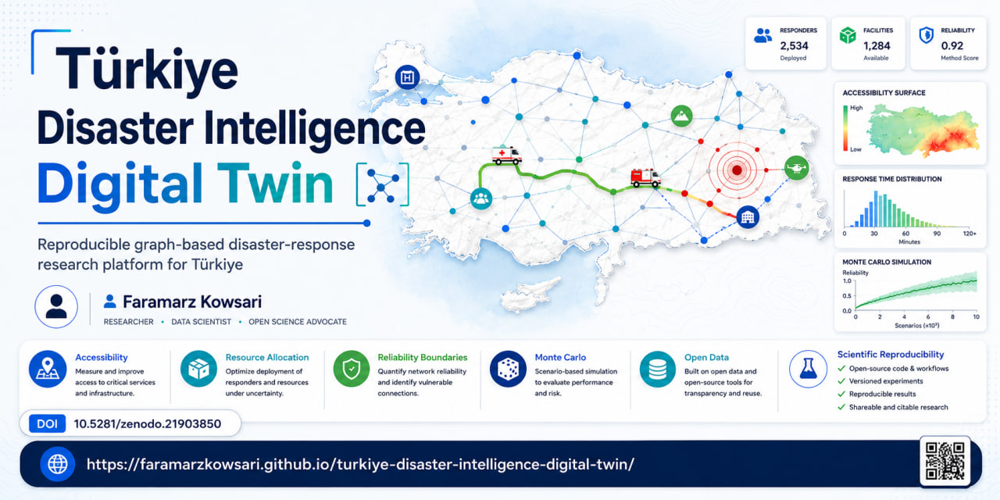

Public data with explicit provenance
AFAD catalogue access and OpenStreetMap roads/facilities enter an auditable research pipeline.
V1.0 · REPRODUCIBLE DISASTER-RESPONSE RESEARCH
A graph-based digital-twin research platform that separates resource-allocation efficiency from network-connectivity failure.

FINAL CONFIRMATORY FINDING
AFAD catalogue access and OpenStreetMap roads/facilities enter an auditable research pipeline.
The same stochastic world is progressively stressed so failures are nested.
The 80/80 crossing is estimated with uncertainty.
ABOUT THE PROJECT
The project models emergency-response accessibility on a disrupted road graph.
Read the complete project dossierThe frozen release quantifies how the reliability boundary shifts with responder availability.

AUTHOR
Author · Software Engineer · AI Researcher
Faramarz Kowsari is based in İstanbul and develops open research software, technical research systems and educational material spanning applied AI, data-driven decision support, graph-based modeling and reproducible computational research.